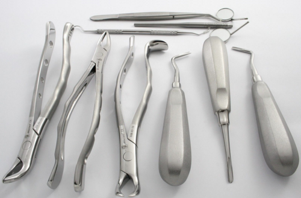

Overview
Plastic surgery
--- Overview
Plastic surgery is used to repair and reconstruct missing or damaged
tissue and skin.
tissue and skin.
The main aim of plastic surgery is to restore the function of tissues and
skin to as close to normal as possible.
Improving the appearance of body parts is an important, but
secondary, aim.
Plastic surgery is different from cosmetic surgery, which is surgery
carried out solely to change a healthy person's appearance to achieve
what they feel is a more desirable look.abnormalities that have existed from birth, such as a cleft lip and
palate, webbed fingers, and birthmarks
areas damaged by the removal of cancerous tissue, such as from the
face or breast
extensive burns or other serious injuries
Plastic surgery can often help improve a person's self-esteem,
confidence and overall quality of life.
the NHS. But availability varies around the country and is determined
by local clinical commissioning groups (CCGs).
Plastic surgeons have extensive training and belong to professional
associations, such as the British Association of Plastic Reconstructive
and Aesthetic Surgeons (BAPRAS).
Check whether a particular surgeon belongs to BAPRAS
Most people are referred to NHS plastic surgeons by their GP or a
specialist consultant they see about their condition.
Plastic surgery is also available privately, but it can be very expensive.
It's still a good idea to speak to your GP or specialist first if you're
considering private treatment, even if a referral isn't required.skin grafts – where healthy skin from an unaffected area of the
body is removed and used to replace lost or damaged skin
skin flap surgery – where a piece of tissue from one part of the
body is transferred to another, along with the blood vessels that
keep it alive; it's called flap surgery because the healthy tissue
usually remains partially attached to the body while it's repositioned
tissue expansion – where surrounding tissue is stretched to enable
the body to "grow" extra skin, which can then be used to help
reconstruct the nearby area
As well as these techniques, plastic surgeons also use many other
methods, such as:
fat transfer or grafting – where fat is removed from one area and
inserted in another area, usually to correct unevenness
vacuum closure – where suction is applied to a wound through a
sterile piece of foam to draw out fluid and encourage healing
camouflage make-up or cream
prosthetic devices, such as artificial limbs
The degree of risk depends on the size of the affected area, the
surgeon's level of experience, and the overall health of the person
having the procedure.
Some procedures carry specific risks, but general risks include:pain and discomfort
bleeding
infection
Contact your surgeon, healthcare team or GP immediately if you have
any concerns after surgery, such as unexpected pain, swelling,
discharge, or other side effects.
skin to as close to normal as possible.
Improving the appearance of body parts is an important, but
secondary, aim.
Plastic surgery is different from cosmetic surgery, which is surgery
carried out solely to change a healthy person's appearance to achieve
what they feel is a more desirable look.
When plastic surgery is used
 Plastic surgery can be used to repair:palate, webbed fingers, and birthmarks
face or breast
Plastic surgery can often help improve a person's self-esteem,
confidence and overall quality of life.
Availability of plastic surgery
Reconstructive plastic surgery is usually carried out free of charge onthe NHS. But availability varies around the country and is determined
by local clinical commissioning groups (CCGs).
Plastic surgeons have extensive training and belong to professional
associations, such as the British Association of Plastic Reconstructive
and Aesthetic Surgeons (BAPRAS).
Check whether a particular surgeon belongs to BAPRAS
Most people are referred to NHS plastic surgeons by their GP or a
specialist consultant they see about their condition.
Plastic surgery is also available privately, but it can be very expensive.
It's still a good idea to speak to your GP or specialist first if you're
considering private treatment, even if a referral isn't required.
Plastic surgery techniques
The main techniques used during plastic surgery are:body is removed and used to replace lost or damaged skin
body is transferred to another, along with the blood vessels that
keep it alive; it's called flap surgery because the healthy tissue
usually remains partially attached to the body while it's repositioned
the body to "grow" extra skin, which can then be used to help
reconstruct the nearby area
As well as these techniques, plastic surgeons also use many other
methods, such as:
inserted in another area, usually to correct unevenness
sterile piece of foam to draw out fluid and encourage healing
Risks of plastic surgery
As with any type of surgery, plastic surgery has associated risks.The degree of risk depends on the size of the affected area, the
surgeon's level of experience, and the overall health of the person
having the procedure.
Some procedures carry specific risks, but general risks include:
Contact your surgeon, healthcare team or GP immediately if you have
any concerns after surgery, such as unexpected pain, swelling,
discharge, or other side effects.


@official Plastic surgery || by ak